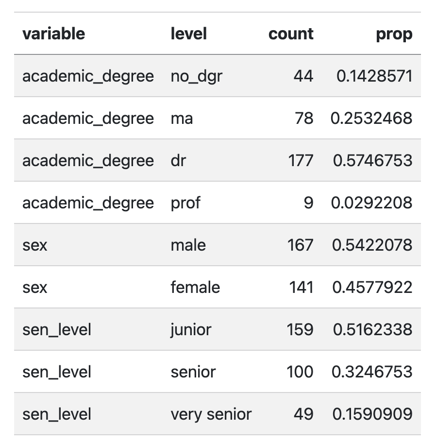
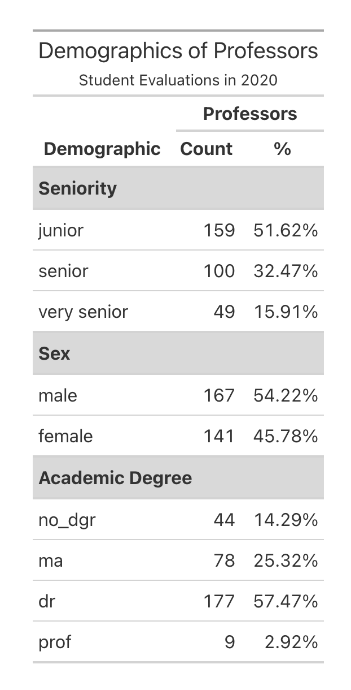
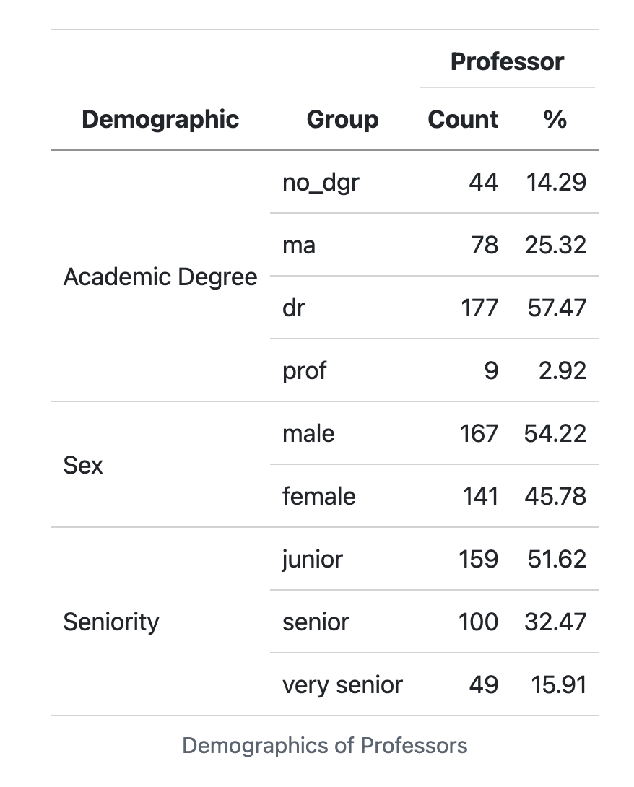

library(tidyverse)Lab 8: Searching for Efficiency
The Data
For this week’s lab, we will be revisiting questions from previous lab assignments, with the purpose of using functions from the map() family to iterate over certain tasks. To do this, we will need to load in the data from Lab 2, Lab 3, and Lab 7.
Edit the code below to read in the appropriate datsets that you should have saved from the previous labs!
getwd()[1] "/Users/czmann/Documents/teaching/stat331/stat331-calpoly-s25/labs/lab8"# Data from Lab 2
surveys <- read_csv("../lab2/surveys.csv")
# Data from Lab 3
evals <- read_csv("../lab3/input/teacher_evals.csv") |>
rename(sex = gender)
# Data from Lab 7
fish <- read_csv("../lab7/BlackfootFish.csv")Formatting Tables
In this lab, we will also practice making nice, report worthy, tables!
I would recommend you think of tables no different from the visualizations you’ve been making. We want all aspects of our tables to be clear to the reader, so the comparisons we want them to make are straightforward. You should be thinking about:
- Column headers
- Grouping headers
- Order of columns
- Order of rows
- Number of decimals included for numeric entries
- etc.
Tables are also a great avenue to display creativity! In fact, there is a yearly RStudio table contest, and here is a gallery of the award winning tables!
There are many packages for generating tables but I recommend either kable() function from the knitr package or gt() function from the gt package and their add-ons.
For simple tables
- the
kable()function from the knitr package for simple tables - the
gt()function from the gt package
For more sophisticated tables
- styling functions from the kableExtra package (e.g.,
kable_styling(),kable_classic()) - add-on functions from the gt package (e.g.,
cols_label(),tab_header(),fmt_percent())
Warning
Quarto doesn’t play nice with some options for formatting HTML tables in other packages.
To make sure that your tables render as expected, we need to specify html-table-processing: none in the YAML header. You will notice that I already included that in this lab.
I also recommend using the Source Editor for this lab.
Lab 2
First up, we’re going to revisit Question 2 from Lab 2. This question asked:
What are the data types of the variables in this dataset?
1. Using map_chr(), produce a table of the data type of each variable in the surveys dataset. Specifically, the table should have two columns var_name and type with a row for each variable and be displayed using kable().
Tip
You will want to check out the enframe() function to help with this task.
# Q1 code2. Format the table nicely! Think about the order of the rows to make the information easy to take in. Using either kable() and functions in the kableExtra package or gt() and functions from the gt package to make a table that includes a caption or header, and nice, bolded column names. Note that you should assign the column names when creating the table, not by renaming columns in the dataset itself because we hate variable names with spaces in them!
# Q2 codeLab 3
Now, were on to Lab 3 where we will revisit two questions.
In the original version of Lab 3, Question 4 asked you to:
Change data types in whichever way you see fit (e.g., is the instructor ID really a numeric data type?)
3. Using map_at() or map_if(), convert the course_id, weekday, academic_degree, time_of_day, and sex columns to factors. In other words, convert all character variables into factors. DO NOT PRINT OUT YOUR NEW DATA FRAME, just show the code. Hint: You will need to use bind_cols() to transform the list output back into a data frame.
# Q3 codeNext up, we’re going revisit Question 7 which asked:
What are the demographics of the instructors in this study? Investigate the variables
academic_degree,seniority, andsexand summarize your findings in ~3 complete sentences.
Many people created multiple tables of counts for each of these demographics, but in this exercise we are going to create one table with every demographic.
4. Recreate the (mainly unformatted) table below using one pipeline. It is okay if the rows are not in the same order in your table.

Note
Repeat the data cleaning steps that we did in Lab 3 before question 7 to recreate this exact table. And remember that we needed to first only keep one row per instructor.
Tip
There are two main ways (that I have thought of) to approach this efficiently:
Using the
map_at()funtion. Thelist_rbind()function and thenames_toargument in that will be helpful!Using both
pivot_wider()andpivot_longer().
It is easiest to start with creating a dataframe that has the variable, level, and count columns and then calculate prop, the proportion of professors that are in each group.
Final tip (not required) - I used the following options in kable_styling() to output this table:
kable_styling(full_width = F,
bootstrap_options = "striped")
Same classification as Lab 3
I’m using the sen_level classification from Lab 3
"junior"=seniorityis 4 or less (inclusive)"senior"=seniorityis between 4 and 8 (inclusive)"very senior"=seniorityis greater than 8.
# Q4 code5. Now turn that into a very nice table, like one of the examples below using kable() and kableExtra or gt.


Your table does not need to copy one of these exactly but it should include:
- Some way of clearly indicating the three variable types as row groups
- Giving nice column names
- Using a column header that spans the count and % columns
- Nicely formatting the % column
- Giving it a title or a caption
#Q5 codeLab 5
In lab 5 we got to solve a mystery using a bunch of different related data sets. Remember how we got the data?
This code chunk will read in all of the tables of data for you. Don’t modify or remove this!
This was also a mystery at the time! The code chunk given loaded an .Rdata file that included all of the data frames. However, your data may not always be saved in a nice .Rdata file~ Let’s write a more general function to read in lots of datasets ourselves!
6. Write a function whose only argument is a directory that will read in all .csv files in that directory and return a list of the data frames.
Specifically your function should:
- Find the names of all .csv files in that directory (the
list.files()function will be helpful). - Use
map()to efficiently read all of the files into R and save them in a list - Rename the elements of the list with the names of each file
- Return the list
Test your function on a directory that has at least two .csv files in it and show us that it works! DO NOT print full datasets. Show us that the output is a list and that the names of the list are file names. Your function should be able to handle if a directory includes files that aren’t only csv’s
# Q6 code
Note
For example, if I have a directory data/ that has surveys.csv, teacher_evals.csv, and bCH_murder_data.Rdata in it, the function should return a list with two elements - the surveys and teacher_evals data frames. The names of the list elements should be "surveys" and "teacher_evals".
Lab 7
For our last problem, we will revisit a question from the most recent lab. Question 1 asked you to use across() to make a table which summarized:
What variable(s) have missing values present?
How many observations have missing values?
7. Using map_int(), produce a nicely formatted table of the number of missing values for each variable in the fish data.
#Q7 code